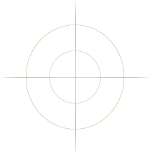
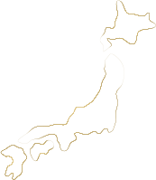
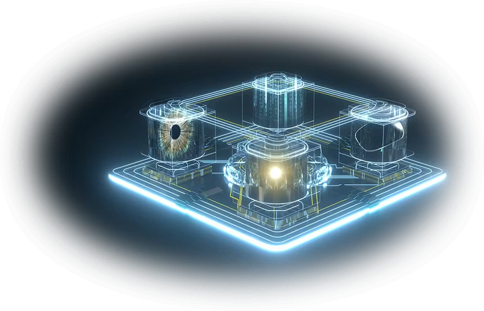
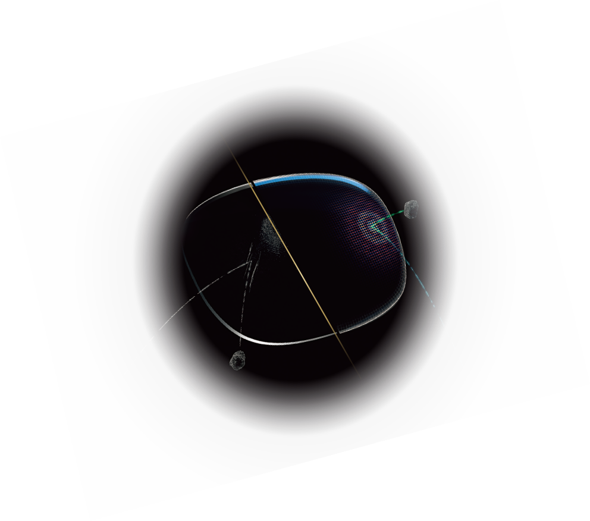
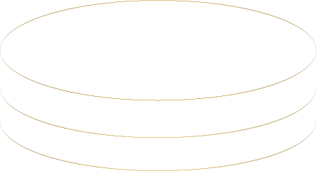
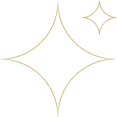
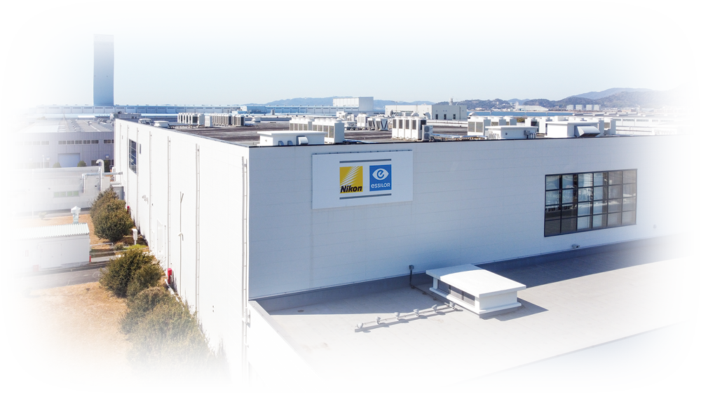

アイディションシリーズ
Eyedition Series
ニコンのメガネレンズ最高位コレクション
100年以上の歴史を持ち、78年前からメガネレンズを手掛けてきたニコン。
画像処理や宇宙探査など最先端の分野から、
私たちの日常を支える視覚の世界まで、常に「光」と向き合い、その可能性を追求し続けてきました。
高精度を極め、1人ひとりのニーズに応えるクリアな視界を実現すること。
その想いのもと、長年培ってきた技術の結晶として誕生したのが、「Eyedition Series」です。
先進の光学技術と熟練技能を結集した、ニコンレンズウェア史上最高位コレクションです。
ニコンレンズウェアの
技術を、ひとつに
-

ニコンがたどり着いた視界
積み重ねた光学技術が導く、澄みわたる視界
-
長く続く、澄んだ視界
技術を詰め込んだコーティングでレンズを守り、クリアな視界を保つ
-

日本の技が支える品質
ニコンレンズウェアのフラグシップ工場で、丁寧に仕上げる
本物の価値を知る
あなたへ
-
01細部まで澄み切った
視界を求める方へ -
02視界の美しさも
レンズの耐久性も、
一切妥協したくない方へ -
03確かな技術と品質に
こだわる方へ
TECHNOLOGY & FEATURES
技術と特長
-
ContrastDESIGN SYSTEM コントラストデザインシステム

ニコンがたどり着いた視界
ニコンレンズウェアが培ってきた光学技術を結集。
細部まで澄みわたる見え心地が、日常に新たな質をもたらす。 -
CoatingTOYOKAWA SIGNATURE トヨカワシグネチャーコーティング

長く続く、澄んだ視界
約10年にわたる研究開発でたどり着いたレンズ保護技術。
レンズコーティングにニコンレンズウェアの技術を集約し、傷が汚れからレンズを守り澄んだ視界を保つ。
※お取り扱い方法によっては、キズやひび割れ、撥水性能の低下などコーティング性能の劣化が生じる場合があります。
-
-

高い耐キズ性能
宇宙船の防護壁に
着想を得た耐キズ性能 -

高い撥水性能
汚れや指紋が
つきにくい -
高い耐久性能
時間が経過しても
初期性能が長持ち
-
-
CraftedIN JAPAN

日本の技が支える品質
Eyeditionシリーズは、愛知県豊川市にあるニコンレンズウェアのフラッグシップ工場のみで生まれる。
精密製造の盛んな地として知られる豊川市。
熟練技能と技術革新が融合し、妥協なき品質を生み出す。